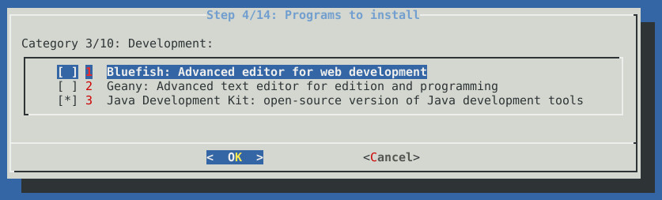
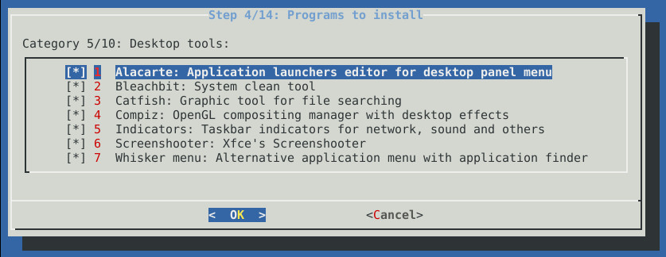
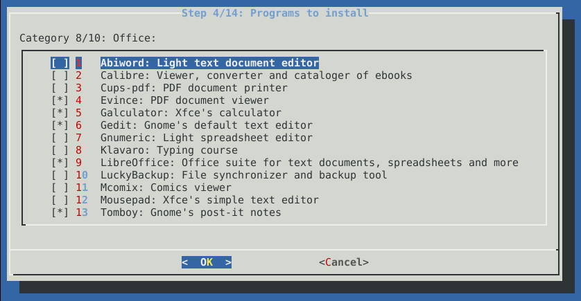
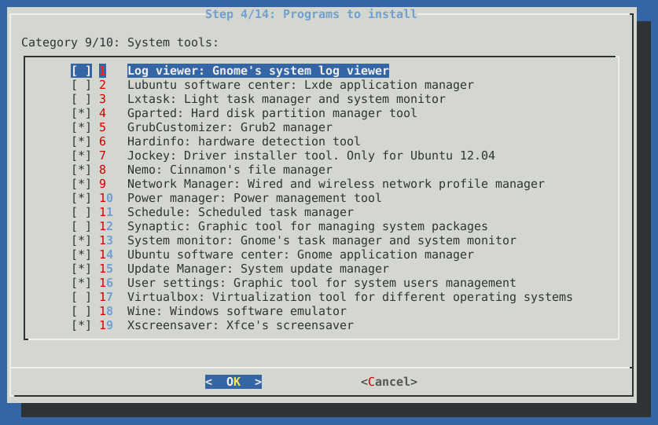
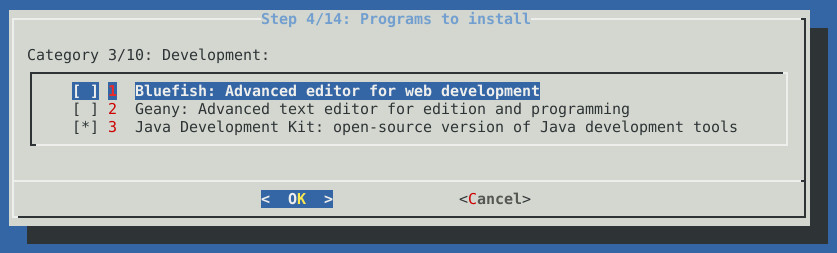
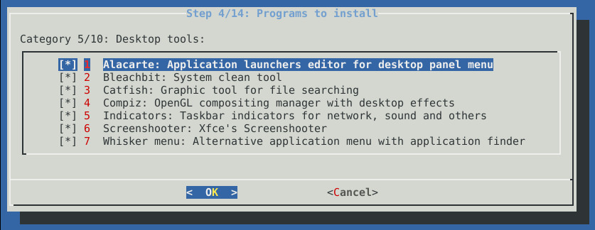
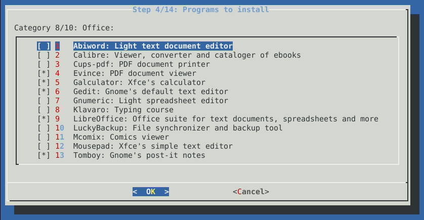
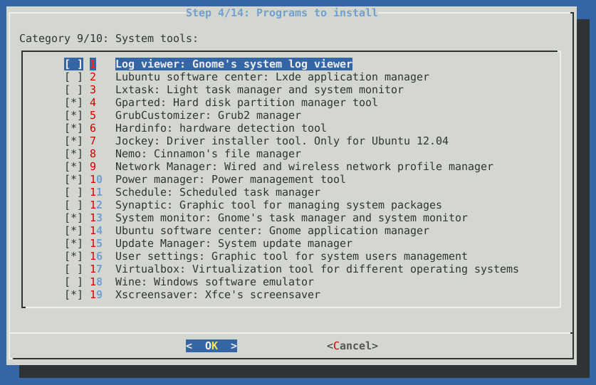

Introduction
This script installs Xfce desktop and a set of programs according to user needs starting from an Ubuntu Server base system
Main features
- Unattended installation of the Xfce desktop and selected applications by user.
- Error Log during the installation process.
- Ability to shutdown, restart or show error log at the end of the installation process.
- It offers a great variety of programs of different types.
- Automatic configuration of applications to be ready to use them.
- Multi-lingual support: english and spanish texts included in script.
Why use this script over other alternatives?
- Not a distro. It's a script. Quick to download it and use it.
- It's valid for homes, offices and servers.
- It can be installed on different versions of Ubuntu: 12.04 and 13.04.
- Lower consumption of system hardware resources.
- Greater customization of applications to install.
- Ubuntu Server offers more maintenance period than a conventional Ubuntu desktop version.
- Save configuration time after the installation proccess.
- More dynamic, it offers applications from different desktops. Not limited only to Xfce desktop.
- Modern desktop themes (Faenza icons and GreyBird theme).
- Automatic installation of third-party repositories.
Prerequisites
- Download Ubuntu Server 12.04 or 13.04 from Ubuntu homepage.
- Install Ubuntu Server for 32 or 64 bits (recommended without any desktop).
- Set up network and internet connection.
- User login on terminal to start installation steps.
Installation
$ wget https://github.com/cesar-rgon/xfce-installer/archive/master.tar.gz
$ tar -xvf master.tar.gz
$ cd xfce-installer-master
$ sudo ./install.sh 






